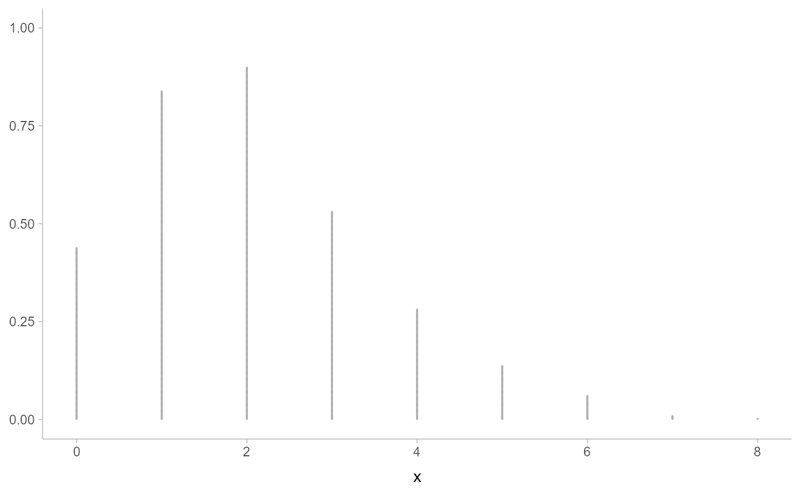
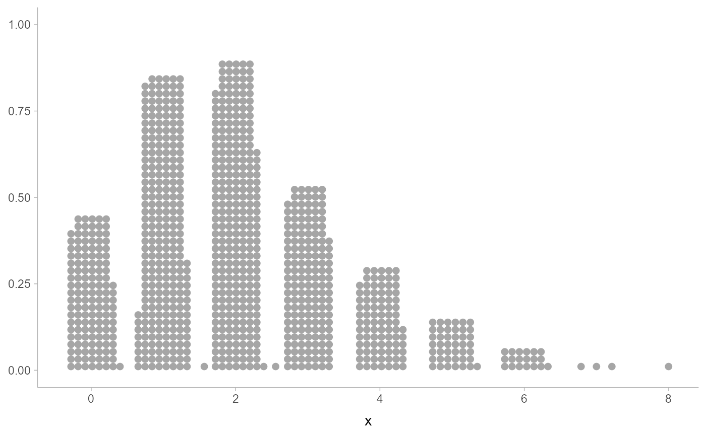
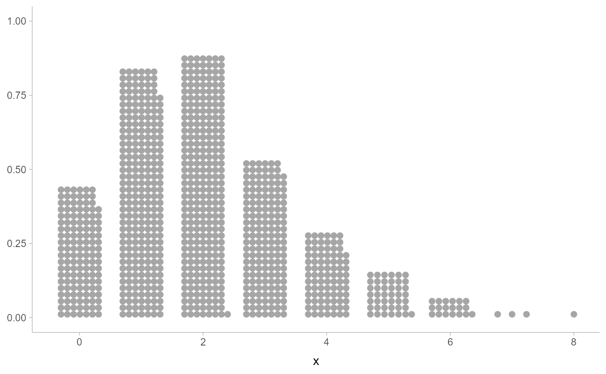
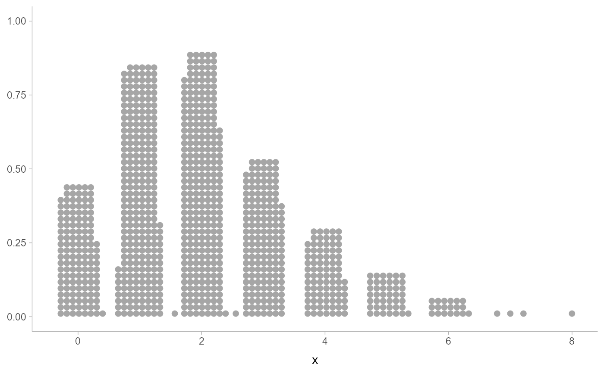
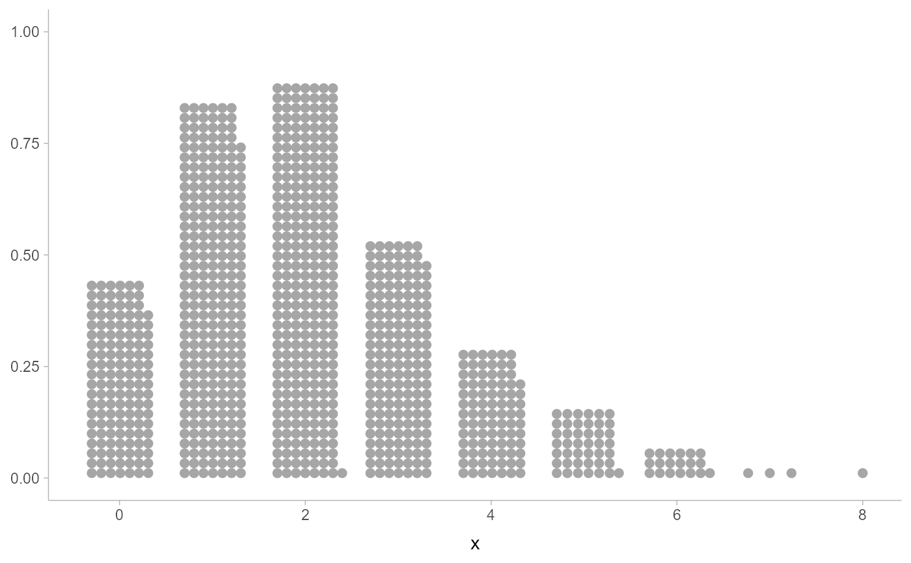

Smooth dot positions in a dotplot of discrete values ("bar dotplots")
Source:R/smooth.R
smooth_discrete.RdNote: Better-looking bar dotplots are typically easier to achieve using
layout = "bar" with the geom_dotsinterval() family instead of
smooth = "bar" or smooth = "discrete".
Smooths x values where x is presumed to be discrete, returning a new x
of the same length. Both smooth_discrete() and smooth_bar() use the
resolution() of the data to apply smoothing around unique values in the
dataset; smooth_discrete() uses a kernel density estimator and smooth_bar()
places values in an evenly-spaced grid. Can be used with a dotplot
(e.g. geom_dots(smooth = ...)) to create "bar dotplots".
Supports automatic partial function application.
smooth_discrete(
x,
kernel = c("rectangular", "gaussian", "epanechnikov", "triangular", "biweight",
"cosine", "optcosine"),
width = 0.7,
...
)
smooth_bar(x, width = 0.7, ...)Arguments
- x
a numeric vector
- kernel
string: the smoothing kernel to be used. This must partially match one of
"gaussian","rectangular","triangular","epanechnikov","biweight","cosine", or"optcosine". Seestats::density().- width
approximate width of the bars as a fraction of data
resolution().- ...
additional parameters;
smooth_discrete()passes these tosmooth_unbounded()and thereby todensity_unbounded();smooth_bar()ignores them.
Value
A numeric vector of length(x), where each entry is a smoothed version of
the corresponding entry in x.
If x is missing, returns a partial application of itself. See automatic-partial-functions.
Details
smooth_discrete() applies a kernel density estimator (default: rectangular)
to x. It automatically sets the bandwidth to be such that the kernel's
width (for each kernel type) is approximately width times the resolution()
of the data. This means it essentially creates smoothed bins around each
unique value. It calls down to smooth_unbounded().
smooth_bar() generates an evenly-spaced grid of values spanning +/- width/2
around each unique value in x.
See also
Other dotplot smooths:
smooth_density,
smooth_none()
Examples
library(ggplot2)
set.seed(1234)
x = rpois(1000, 2)
# automatic binwidth in basic dotplot on large counts in discrete
# distributions is very small
ggplot(data.frame(x), aes(x)) +
geom_dots()

# NOTE: It is now recommended to use layout = "bar" instead of
# smooth = "discrete" or smooth = "bar"; the latter are retained because
# they can sometimes be useful in combination with other layouts for
# more specialized (but finicky) applications.
ggplot(data.frame(x), aes(x)) +
geom_dots(layout = "bar")
 # smooth_discrete() constructs wider bins of dots
ggplot(data.frame(x), aes(x)) +
geom_dots(smooth = "discrete")

# smooth_bar() is an alternative approach to rectangular layouts
ggplot(data.frame(x), aes(x)) +
geom_dots(smooth = "bar")

# adjust the shape by changing the kernel or the width. epanechnikov
# works well with side = "both"
ggplot(data.frame(x), aes(x)) +
geom_dots(smooth = smooth_discrete(kernel = "epanechnikov", width = 0.8), side = "both")
# smooth_discrete() constructs wider bins of dots
ggplot(data.frame(x), aes(x)) +
geom_dots(smooth = "discrete")

# smooth_bar() is an alternative approach to rectangular layouts
ggplot(data.frame(x), aes(x)) +
geom_dots(smooth = "bar")

# adjust the shape by changing the kernel or the width. epanechnikov
# works well with side = "both"
ggplot(data.frame(x), aes(x)) +
geom_dots(smooth = smooth_discrete(kernel = "epanechnikov", width = 0.8), side = "both")